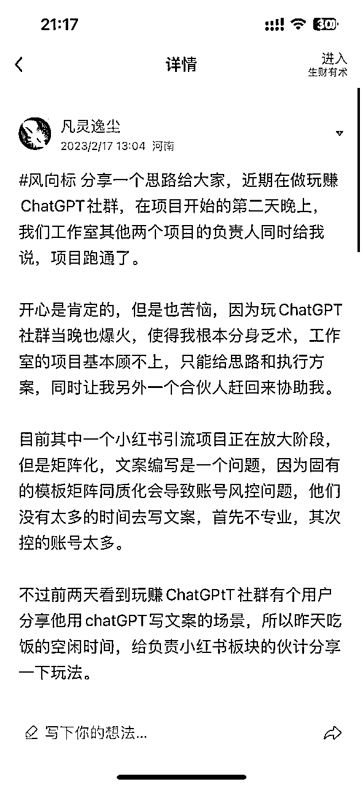
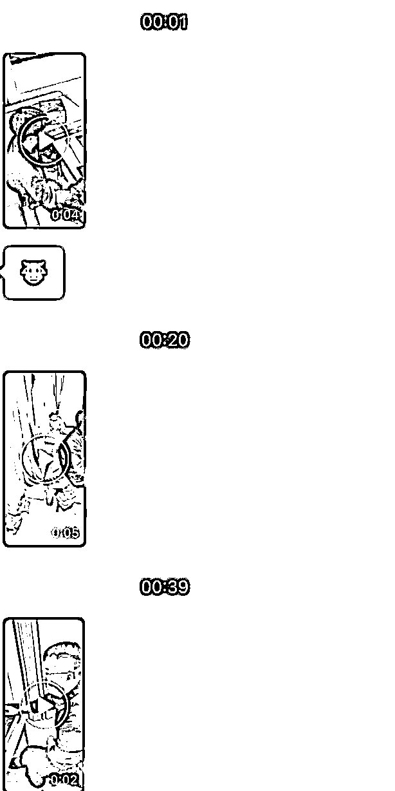
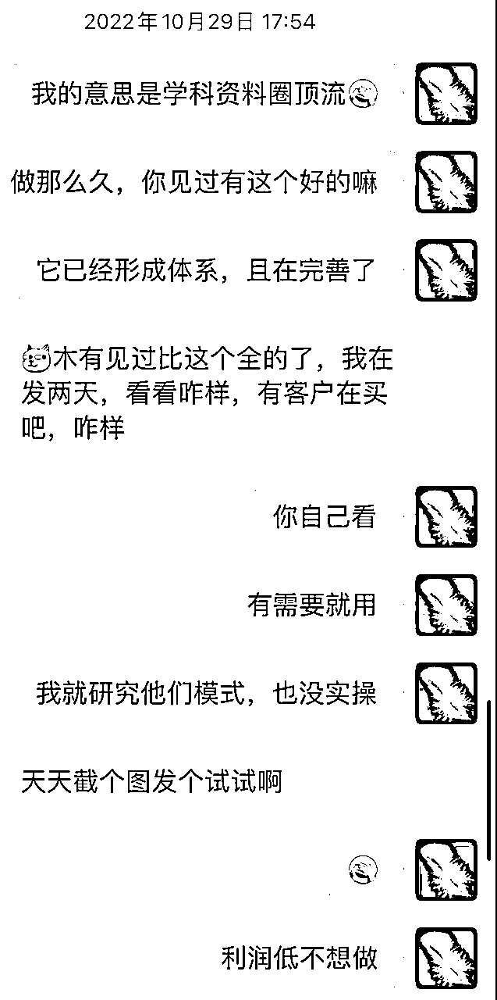
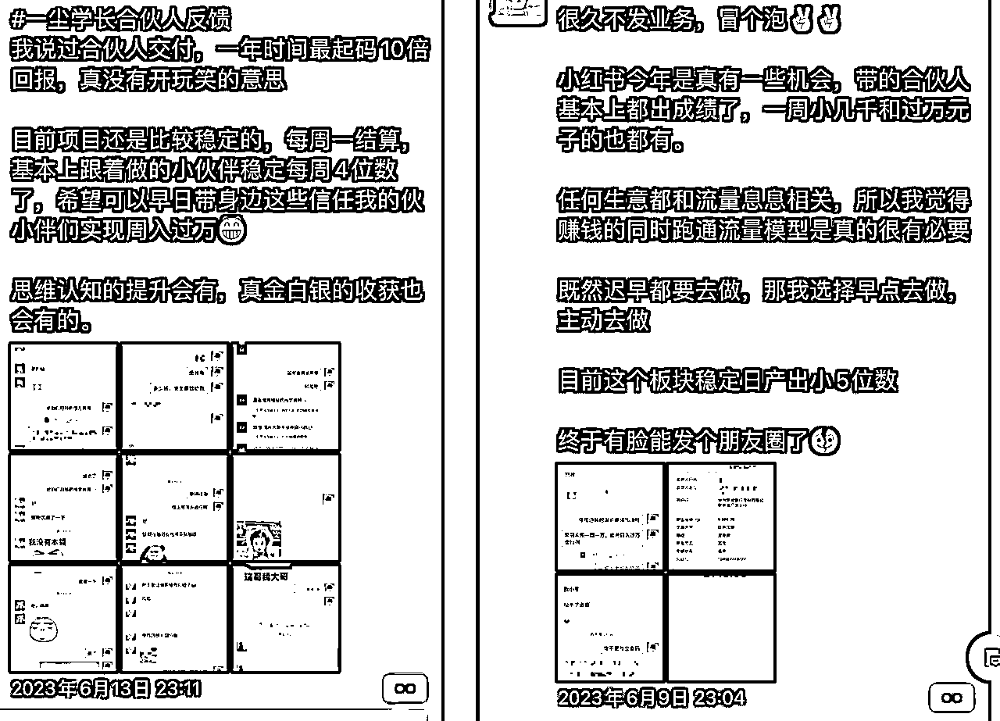

来源：https://vfqxua5lvd.feishu.cn/docx/RUaudLWZ4okZV6xqtrqc3Qybnxe
生财的朋友大家好，我是河南圈友凡灵逸尘，时隔一年又来冒冒泡，给大家分享一下过往的一些经历。
因为近期公司的业务上遇到一些问题，而且和身边的很多创业者朋友聊天，发现业务出现不同程度下滑，行业都在不断的内卷。
这个过程我就在回忆，之前做过的项目是怎么解决问题的，所以就想着把去年五月份时做过的一个项目以及部分经历，进行复盘总结。
一是给予自己一些鼓励，同时也希望这段经历，能够帮助一些朋友。
去年一开年先做的Chat GPT，当时我也是刚从实体转行互联网，从地市搬到省会城市郑州，和几位小伙伴组建的工作室，一起测下项目。
不过由于当时我和河南生财的几位圈友，一起做个玩赚ChatGPT的社群，所以对于项目测试这一块是由我对接资源，其他伙伴执行的，当时还在生财写一个风向标。

为什么选择做流量，对那时的我而言原因很简单，因为启动成本很低，正反馈比较快，天花板相对较高，而且几乎所有行业基本上都需要流量。
之前做过的很多项目中，发现有客户是最重要的，所以从我的角度出发，应该具备获取流量的能力。
不过由于之前主业做教育副业做数码，在21年底的时候副业不仅赔200多万，还欠款50多万，再加上大学时买的房子，每个月不仅要还款5000元的房贷，再加上租房和生活支出，基本上每个月净支出8000以上，现实生活的问题，使得我在项目选择上就需要谨慎。
先开眼看看别人是怎么赚钱的，然后不断的学习别人的优势，在不断的尝试摸索中，最终找到自己想做事情。
不过好在平常喜欢交流学习，从20年开始进生财，基本上每个月我都会来郑州，认识很多的生财圈友，看看他们是怎么赚钱的。
一直到21年我在郑州认识很多生财的朋友，也知道哪些行业是我应该选择的，再加上有个认识几年的大哥做流量的，我觉得他很厉害，所以时常找他学习交流，才对流量赛道有基础的了解。
他在22年的时候，一开始做国学流量就喊着我，可惜当时我还在操盘考研寄宿营地，然后从校区建设到招生和管理基本都是我在负责，虽然他给我说的时候，我就立刻测试，但那时对于线上的了解程度不够，对这件事没有拿到正反馈。
再加上营地有很多的事要处理，分心乏术浅尝而止，所以就看着他一步步赚到很多钱。（具体数字不敢说，大哥平常很低调）
不过因为寄宿营地后来出点事，让我对这个圈子彻底厌倦了，于是我决心换行业。一开始生活的窘迫让我想去找个工作，原因很简单，首先我手上的钱是非常紧张的。
基本上那三个月，教育上工资+业绩欠我十万没给，还不算我的股份。其次就是我觉得毕业这几年创业，都是野路子，想去别人的公司偷师学艺下。
但是后来去找一个大哥，给他说我的想法，但是他不建议我如此。原因很简单，去那些公司没有半年或者一年，可能也学不到什么东西，而且你要清楚自己最核心的目的是什么，业务或者管理，我都可以教你。
再加上有一天半夜，我现在的合伙人瑞哥给我分析，让我决定要好好选择赛道从头再来。只要在创业的路上就回不去了，因为最终还是得出来，那就早一点。
项目不能穿越周期，但是人可以，所以有一些志同道合的朋友很重要，这样能够在有需要的时候相互帮助。
于是开始决定做互联网，期间做过几个项目，都拿到一些不错的结果。在此就不过多赘述，但是这些项目让我不断的意识到流量的重要性。
于是23年决定从地市搬来郑州，离身边的大哥近一点。跟我的小伙伴要么是之前做过项目的，要么是知道我有些资源，来想跟我一块干的，过程就不做赘述了。
然后就开始做流量，当时的工作室分两条线，主线开始做视频号国学直播引流，另外一条线就是小红书图文引流，而且都在第一时间拿到结果，但当时我的主要精力都在ChatGPT，因为当时在被事情推着走。

其中小红书图文引流，做的内容就是儿童绘本和儿童剧本杀，后端是在私域上做项目招商，认识这个后端，也是过年之前有个河南一个圈友说，朋友需要这一块的流量。
我们才年后安排两个人做测试，四个号两天时间跑到日均20个，后续让我合伙人安排几个兼职放大，在一个月内达到流量3000个。
后续原本想再放大，但是这个赛道天花板有点低，只是简单做做，我都还没介入，都已经是到顶了。而且合作的后端销售转化的速度太慢，很多流量都浪费，再加上最后一周流量结算时，后端扣量严重，所以就搁置一段时间。
但我还是想做流量，于是就开始找相应的收量渠道，在此期间测试过旅游赛道、加盟招商等，但是都没有太大的成果，不过随着对这个行业的深入，虽然觉得还是小白，但好在对流量行业懂得就稍微深一点。
后来就去参加杭州圈友见面会，见几个认识一两年的圈友，相互分享一下自己目前做的项目，在此过程中就简单做下介绍目前的业务，然后项目讲下遇到的问题，然后这个圈友时不时找我解决问题，然后都力所能及提供一些帮助，没想到为后续的合作埋下相应的伏笔。
某一天在杭州见面的一个圈友说，要从外地来郑州拜访我，然后带一个郑州的老板找我，咨询ChatGPT项目的问题，这个过程没有藏私知无不言，随着聊天的深入，对双方有更深度的了解。
后来五月有一天我说，他有100W的预算，要K12的客资。问我是否能搞定，毕竟没做过这个赛道，所以也没夸下海口，就决定先测试下看看情况。
然后在第三天签订合同打预付款，安排两部分人分别进行测试，不过中间有些沟通的问题，但是我们两个比较熟，而且相互认可。
有一些细枝末节我觉得都能理解，给他提供的合同需要调整的也都很好的协商，因为对我而言只要人可以信任，合同都是走个流程对双方做个最基础的约束。
信任是让我们在后续少很多沟通成本，因为大家会相互理解各司其职相互合作，也彼此会为对方实际情况考虑。合同是对一些行为的的约束和风险的避免。
我不用担心他不结算费用，也不用担心他把流量用作非法的地方，他不用担心我流量造假，也不用担心我流量复用影响他们项目转化。
线上聊千遍，合作还需线下见面，只有这样才能有更深的了解。而且在后续产生相应的信任，并且有合作的机会。
测试期一共是1000个流量，一部分是我们的小伙伴，一部分是校园团队，然后两边都在一周内，就拿到相应的结果。
我们觉得校园团队操作都没问题，已经完成最小MVP闭环测试，那就可以快速进行复制放大，原本以为一切顺利，但没想到一切只是开始。
我的理解比较简单，由于互联⽹快速发展，市⾯上有很多的公司，把传统的线下获客的⽅式，转移到线上的⼩红书、抖⾳、快⼿等平台，然后通过在线上发布视频/图⽂笔记等引流到微信以后，然后公司针对这些引流过来的用户进行销售。
这样通过各个平台吸引到对产品感兴趣⽤⼾的过程，我们统称为引流。不过许多平台禁⽌引流私域变现的，所以平台会打压营销号。
那么这些想在线上做内容引流的公司，如果想要把意向用户引流到私域，不仅需要⼤量的⼿机，许多的员⼯，还有办公的场地，这样的成本就会很⼤。
所以这些公司就会把引流的活，外包给许多⼤⼩的流量公司，进行风险转移，而且可以在最短的时间满足他们的需求。
他们按照引流⼀个⼈多少来给流量公司结算，也就是要到⼀个⽬标客⼾的联系⽅式多少钱来结算（通常是 1元-200 元/⼈，定价的标准基本取决于流量的获取难易和精准度等），我们把引来的流量卖给公司的过程，就叫流量变现。
一般我们只做流量的，叫做流量方也就是乙方，收流量的公司一般是转化和后端，他们会有自己的销售和相应的产品，所以也就是甲方。
双方的地位是相互切换的，这个是根据不同的时期和体量所决定的，流量多质量高转化好，可能乙方就硬气一些，反之就甲方强势些，但是双方即然合作，往往都是平等的。
常见的合作方式是CPA或者CPS，当然也有CPA+CPS结合的，也有根据ROI进行合作的，下面我简单阐述下不同合作的方式的区别在哪，不过目的都是一样的，就是大家都要赚到钱，这是合作的基本前提。
CPA(Cost-Per-Action):即每个因投放产生的新增有效入群、注册、激活或交易等行为中的一种行为，都产生一个 有效的 CPA。(结算费用=有效的 CPA 数量×每个有效 CPA 的单价)。
CPA计算公式为： CPA=消耗量/转化量。一般是双方谈定一个价格后进行固定，然后有情况再协商进行调整。
CPS(Cost-Per-Sale):即为按照销售成功，支付佣金的计费方式，按照引导用户到达后产生购买行为的用户数或者 按购买金额，按一定分成比例进行计费的方式。
CPS计算公式：CPS总费用=分佣比例×销售额，一般是双方谈好分成比例，然后根据客户的转化情况而浮动。
CPA+CPS 分佣:用户先按X元(单价)一个有效线索计算，另外在转化结束后，经甲乙双方共同确认后，乙方分得由乙方用户产生的总销售额X进行提成。
ROI（Return on Investment）:即投资回报率，是指公司从一项投资活动中得到的经济回报。是衡量一个企业盈利状况所使用的比率，也是衡量一个企业经营效果和效率的一项综合性的指标。
ROI计算公式：ROI=成交金额/消耗费用。
例如按照下面公式，客户成功购买产品算有效，结算单价浮动与产品转化成正比。一个客户单价为100，但是转化需要大于1.2，超出一定的ROI区间，就会有不同的阶梯价格。
| ROI≤1.2 | GMV/1.2 |
|---|---|
| 1.2≤ROI<1.4 | 120 |
| 1.6<ROI | 160 |
每个合作方式各有优劣，需要根据不同的情况，采取不同的合作方式，这个是双方谈出来的，也是根据数据计算出来的，最终趋于一个合理的价格，一般都是一个区间，根据这个区间进行定价，这些受很多的因素影响。
简单一点说，就是在平台上发布目标客户所感兴趣的内容，并通过钩子吸引他留下相应的信息，最终再把这些客户导流给需求用户的甲方。
如下图，这种都是帮某公司做引流的帖⼦，通过发布相关的内容笔记，吸引感兴趣的⽤⼾，然后再通过私信的话术，引导⽤⼾给我们微信联系⽅式。
然后我们再把⽤⼾的联系⽅式统计好了发给甲⽅公司，公司就会按照有效的联系⽅式来结算给我们。
比较简单的方式可以通过搜集客户微信号/手机号的方式，也可以通过让用户主动添加微信，利用计数器统计的方式。
稍微复杂一些的就需要通过二维码或者短链的方式，或者通过相应的第三方工具。只要甲乙双方对流量统计核对没什么疑问都可以，这一块是为了结算和防止数据造假。
目前目前拆解，其实可以把项目进行拆解成如下几个环节，分别是：如何制作内容吸引客户——钩子设计获取客户信息——如何安全导流客户降低损耗——核对数据进行结算
这个流程相对简单一些，但做好也是最难的。一开始我们只是模仿同行，就可以有很多的客户咨询，后来平台规则越来越严格，我们对内容的要求也就越来越高。
这个过程从一开始自己的小伙伴进行摸索，到联系身边朋友，请专业做小红书流量的朋友上门指导，然后再通过优秀的合作渠道相互了解经验，最终赋能给我们的培训学员。
这个过程我们清楚整体的逻辑，但是我和我合伙人没有进行一线实操，只是遇到问题，再一起想办法利用自身的优势解决。
因为如果不做一线实操，就需要通过更多的信息，进行了解一线的问题，并且帮助他们解决，最后把这些形成标准化的内容，降低相应的沟通成本。
我们后来通过做培训整理的相关资料，一开始整理的资料是为了降低沟通成本，梳理成的SOP。后来有一些人感兴趣，就带着他们一起做。
后来发现数据都不错，所以就抽掉一个人加上两个线上小助手，根据已有的SOP和日常的群分享，通过培训把业务体量进行放大，带近两百人一起做。（SOP已放到下文）
K12的钩子一般是学科资料，我们从小学到高中所有学科的资料都是齐全的，一开始是甲方提供的内容，但是会随着合作渠道越来越多，以及平台对于内容的要求越来越严格，所以我们就需要获取更多的爆款资料。
于是我们开始自己扩列资料，在22年的时候，我有朋友想在小红书等平台上引流，然后私域上卖学科资料，就找过我要相关内容。
那时候我帮他解决过这个问题，然后当时还认识一些做学科资料的朋友，所以就先把资料做整合，过程中又找不同的朋友把资料给补全，再把这些卖学科资料的朋友，拉过来给我们做流量。
因为我们目标用户一样，但是变现方式不同，在不影响甲方转化的情况下，对他们的私域用户重新触达一遍，相当于又多一层流量利润。
以至于后来的一些合作渠道，都是之前在微信上卖学科资料的，然后顺着这个思路，我们有个渠道合伙人，在小红书平台上把学科资料类的博主，全部私信一遍，然后和他们很多建立起合作。

导流封号是常态，但我们要相对安全，关于这个其实是需要大量测试的，因为会涉及到封号，如果路径复杂又会有很大的损耗。
一开始只接发微信、后来开始做图、再后来开始上AI二维码，所有的目的就是为了避免封控，除此之外还有大小号导流、评论区导流、群聊导流，再到后来的聚光投放。
关于这块我们是怎么优化的，其实就是把各个渠道每天的数据，进行统计搜集，然后再看看他们的话术、内容、路径，然后给他们提供建议指导。
一开始我们对这些没有感知，因为我们不具备数据统计的能力，后来遇到的问题实在太多，我们下面有渠道问题，上面有甲方问题，所以就开始上工具去解决这些问题。
后来就想到一个办法，通过数据比对，我们很轻易的能判断问题出现在哪，然后帮助渠道做提升，这样信任也就更多些，也能为他们提供更多的价值，还可以更好的保障甲方流量的质量。
我们不仅计算每个渠道不同路径的数据，还会看我们总体盘的数据，这样也会了解到甲方的一些情况，这样有问题，随时可以让他们处理。
我们流量渠道加在一起大大小小五十多家，来源分为几块。分别是私信的小红书博主、抖音视频号直播的主播、校园线上兼职、阿米巴工作室合伙人。
还有我公司合伙人一尘学长，他做IP积累的部分线上合伙人，以及身边朋友推荐的流量工作室。
如果流量少，或者渠道少，流量区分核对就比较简单。但是渠道太多，每天进量也多，遇到的问题也就很多。
所以这块就会利用相应的工具进行，除去工具本身，也要做好渠道的统计，以及每天数量的核实。
但是因为我们每个人对接的渠道不同，为了方便规范就开始用飞书，建立相应的表格，进行在线统计。
不过核对数据的方法有很多种，以上只是我们最终呈现出来的方式，比如可以通过表格对用户ID的进行比对，以及通过第三方的跳转链接对于数据进行核对。
这些远远比计数器来的更详细更具体，如今展示的是我们经过几轮迭代，认为比较好的方式，原本还想找大哥帮忙，给我们上一套财务系统，后来发现体量没有他那么大，所以也就没用。
一开始我们资料不多的时候，用户过来领取就比较方便，后来渠道太多，大家在公域平台发的内容都不一样，所以有些用户过来领取，发现如果不是他想要的，就会有各种问题，影响后端转化。
而且客户发放资料找的也比较麻烦，所以就想到之前一个卖知识付费云盘的朋友。他手上有一套网盘系统，所以打电话让他帮我解决。
这样如果有合作渠道更新前段引流内容，他只需要把资料给我们进行分享，我们放到对应渠道的文件夹，这样遇到个别用户，我们都可以及时查到。
如果有些渠道资料不全，我们也能第一时间溯源是哪个渠道的问题，不至于甲方遇到此类客户还要反馈，影响用户转化，因为客户过来越要某个资料，说明他的意向越强烈。
一开始我们是为了流量渠道，能够给我们更好的贡献流量，所以会把一些玩法分别给他们同步，然后发现效率还是太慢就拉群，再后来有很多渠道过来，仍然需要我们再次进行重复。
所以我们就把重复性高的事情，制作成相应的流程，而且尽可能的很详细，这样能节约我们很多的时间。（这些经验是前两年当生财线上志愿者学到的SOP流程）
下图是我们当时制作的部分内容，后来还是觉得耽误时间，就把一些事情安排出去，招收一些线上小助手，让他们帮助我们进行信息同步。
还有一些问题的处理，比如社群的运营，还有培训的相关事宜，以及玩法的更新等等，由一个小伙伴带着两个兼职处理。
以下是部分可以公开的手册，但是后来很多都进行迭代了，平台在进行变化，我们也需要跟得上，只不过后来稳定再加上有兼职，所以很多都让他们来处理，当时我们的群也比较多，所以有什么事都直接让他们同步，也就慢慢的让他们在原有的内容基础上做增加。
这块的小助手，有一个还是通过七小帮忙介绍的，因为他在培训助手比我们强，当时因为时间精力有限，所以直接找他要现成的人才，好兄弟有需要必须得让他帮忙。
一开始我们需要对接不同的流量渠道，这个过程还不繁琐，因为我和合伙人分工进行。后来随着我们扩张，有公域的网创IP找我们合作，不过他们想收费培训。
但是公域上的人群质量可能相对浮躁，再加上后来我们甲方渠道也扩列一些，方便对接，也开始整理出相应的对接方式，我们根据情况做出相应的流程，这样把不同的渠道负责人做好链接。
关于这块我们一共迭代四轮，最开始是用户通过联系流量渠道小红书账号，然后再通过私信添加到微信，最后在微信上经过筛选到甲方。
后来遇到过渠道流量造假、微信号风控、对用户回复信息不及时等各种问题。一开始我还会根据这些行为进行写流程分析，直到最后上工具。（忽略我这小学生的字体）
于是我们开始尝试第二次优化，一般没有私域积累的小伙伴，可能微信不够，扛不住大量流量进入，所以不再让渠道把用户从小红书引流到他们的个微，而是让他们微信加入我们的企微主体，然后通过他们的企业微信账号给用户沟通，而且有快捷回复会更好一些，并梳理好流程。
这个过程发现损耗比较高，而且有些渠道乱搞，我们开始第三轮优化，直接让渠道从小红书引流到我们的企业微信，然后找两个客服专门进行回复。
从早上8点到晚上12点左右，中间吃饭的时候也会有人值班，防止他们过来的流量浪费，毕竟我们很清楚的知道哪怕晚回一秒信息，用户不在的概率越大，因此要及时响应。
但这样太费人，所以我又去找身边朋友，看看有没有工具，开始进行第四轮优化。关于流量赛道，其实我有个好大哥天天指导我，遇到问题我就去请教。
每次去我都会提前罗列出一张A4纸的问题，然后让他帮我解答，这个也是带我做国学的大哥。
时常遇到问题，直接开车去他们公司，把需求给他说，因为做国学的时候，知道他有这套系统，然后他就把自己开发的系统免费给我们使用。
后来有个朋友也想用这套系统，我就问他价格，然后说30W一年，我朋友觉得之前的自己找人开发的系统也能凑合用。（感谢大哥的帮助，省掉一定的费用）
至此我们解放客服，完美实现全自动回复，用户自动打标签，对用户进行更精细化的管理等，而且避免渠道流量造假，也能很清楚的知道渠道有什么问题，应该怎么解决并且有完整的链路。
我们中间遇到过两次渠道流量造假，他直接让身边朋友扫码加微薅羊毛，而且刚开始难查到，后来上完工具就很容易查到后，我们就决定要避免，所以才会用那么多工具，想那么多方法。
有些渠道合作一段时间，会来回横跳也有造假搞事的各种的问题，我们就要对很多流量渠道签合同，从而避免一些问题，为甲方考虑。（合同是最基础的保障，因为这个我们避免掉一些麻烦，在此就不公开了。）
然后就又安排上线上电子签，这样节约等快递的时间。为啥知道这个东西，是因为前两年负债的时候，主动想给朋友写欠条，然后朋友告诉的这个方式。
我觉得很方便，就找一个大哥买一年的套餐，不过后来也没用完。当时为了看客服的聊天内容，因为怕有些问题及时得不到解决。
又联系喵哥给我安排一套私域管理软件，也就是私域管理软件堆雪球，这个是我们做玩赚ChatGPT的时候，我们当时用的一套方案。
我们都是在遇到问题解决问题的过程，虽然有很多都是我们提前预想到的，但是还有一些是我们从未遇到的，只不过事情逼着我们不断的往前走，无论什么情况都不能停，直到对所做的事筋疲力尽，没有信念。
整体来说，我们一共通过三种方式获取流量，首先是几个小伙伴自己做账号，他们属于阿米巴模式。其次就是流量渠道合作，最后就是培训收量，因为我们需要在最短的时间内，把体量做上去。
我合伙人有几个从大学跟他至今的小伙伴，他们自己做账号，然后会把方法交给身边的朋友，并带着他们朋友一起做账号，有通过线下地推的，也有通过在平台截流的，甚至有去给做学科资料知识付费的谈合作，让他们进行二次变现。
这个基本来自于我们身边认识的流量团队，那时候还没有流量社群，原本想做一个聚集点人，但是精力有限就没行动，还有就是身边朋友介绍，以及在社群里发资源链接，因为我有个习惯，日常会看看有哪些需求可以挖掘。
因为之前我们做过AI+百度问答项目，大概收将近三千个学员，而且很多人都赚到钱，但当时项目赚钱，我们没有后端收益。
后来是有人看我合伙人发的反馈，他收的线上合伙人都是搞项目和做IP的，执行力和基础能力不错，再加上他天天指导，项目反馈也不错，所以就慢慢有其他人想跟着我们做。
但是又不像流量团队专业，还需要教学。我们想着反正各方面都稳定，可以多增加点产出，基数多一起能多赚点钱，所以就安排一个负责人加两个助手，收两百多人进行培训，带他们赚点零花钱。
后来公域的网创IP也找到我们，但他们收费三千多，不过这些人执行力高很多，通过与我们培训的大多数学员对比来说，让我们意识到人还是需要筛选，不然培养的周期有点长，花费那么多时间不如找到一个好的渠道。

万物各得其和以生，各得其养已成。他们之间互相配合互相选择。相对合作关系，我们更多的是朋友，因为过程中会遇到很多的问题，需要去解决。
有些需要帮助的，也要想办法帮他们解决一些问题，比如截流软件测试，还有认证的资质问题，都会给他们共享或者尽力解决。
但是我们也严格，特别是我们做培训的，因为我们两个道德标准较高一些，但是做项目很多人就是难以拿到结果。
因此我们就做项目的时候就会先劝退几次，这样也是我们反向筛选的过程，后续有极个别反馈各种理由问题且有意见的，我们一致会先认为是我们的问题，然后从这个视角出发解决。
当时的想法也比较简单，自营是为了帮我们解决一些基础问题，并且保持基础的进量，渠道合作则是追求更多的流量来源和玩法互补，培训则是作为放大，筛选培养更多做流量的人，并且对抗流量的不稳定性。
这有段时间是我困扰的问题，因为做流量的会遇到一个问题，就是当你的甲方慢慢不缺流量的时候，或者把你的玩法复制给其他渠道的时候，以及转化有问题的时候，就会不断的压缩你的利润空间，这是必然现象，不是由人的意志为转移。
所以就需要很多的甲方，但这些渠道应该去哪找呢，我一共尝试几种方式，首先是之前听大哥说过一个关键词BD邦，然后问身边的朋友，在各个社群搜索关键词，以及在公域平台看视频和直播。
至今记得有天晚上看一个小姐姐，开心的睡不着，被人看来我是看美女直播。其实我是听对方直播，挖掘关键性信息，最终付费打赏交个朋友，因此获得很多此行业的渠道，然后再通过群扩列找到更多的甲方。
后来这个小姐姐，来郑州主动和我们组建一个公司，发展了一些其他的业务，从而做相应的拓展。
很多问题只要你想，总能找到解决方案，哪怕找不到，最终这个过程也是自身的收获，因为是对自己的探索，最起码知道自己不知道。
平台去年八月份左右风控，开始需要认证玩聚光，让我们陷入困境，因为不付费起号引流就封，付费投流光开口成本都很高，所以我们就需要变化玩法，否则流量渠道会遇到相应的问题，导致投产比降低很多。
上文说了，我和合伙人不在一线，从项目开始到结束，没有做过一个账号和发过一篇文章，就导致我们对这个事遇到关键问题时，没办法第一时间解决问题，下面小伙伴解决问题的能力又不够。
我和合伙人就开始各自联系相应的人，一般会找关系好的同行，然后通过资源互换的方式解决，他则会找对下的渠道，看看有哪些解决方式，因为我俩都不是技术人才，所以就只能通过其他方法进行攻关。
后来就是我们联合人进行测试，然后再把信息汇总让人验证，通过多个信息玩法对比，然后看看哪个方式好用，不过最终问题也出现在这，就是阿米巴的模式不如直营，很多的问题解决只能浅尝辄止，所以从零到一的事还是得我们亲自再走一遍。
平台需要营业执照以及出版物，这个办理一般需要很久的时间，而且还需要花一定的资金，而且一个执照，平台改规则后只能认证两个，虽然也可以通过办理个体工商户认证咨询类。
但是信息在名下也比较麻烦，关于这个也是一个渠道提供的解决方案，淘宝是万能的，里面有很多的代办可以聊聊需求。（点到为止）
账号问题也是我们做互联网要解决的问题，因为设备风控可以更换设备，但是账号问题因为政策限制，所以对于很多人也难以解决。
特别是河南，每个营业厅一个月只能实名一张手机卡，所以就需要通过其他方式解决，这个除了常见且有风险的JM，也可以去淘宝找到所需要的卡。
曾经以为矩阵是一件很容易的事，直到后来真的开始介入矩阵的时候，才发现第一步账号都是不小的问题，然后就是设备的问题，紧接着就是技术的问题。基数对抗概率，也需要一定的方法，而这是大量测试出来的经验。
从做流量开始，整个项目唯一赔过的钱，就是来自测试。因为合作的甲方，后端产品在调整，所以对于客户群体的要求也在改变。
我们就需要找更多的甲方，但是这个过程就需要测试匹配，这个过程就需要找流量渠道进行测试，测试的过程也是磨合的过程。
这个过程要么是有一定数据，但是没有相应的转化，要么则是起量需要一定的时间，而且基本上都是ROI，转化也需要一段时间。
我们期间测试的流量，有一些则没有任何产出，所以整体下来亏损大几千，而且也浪费相应的时间，但这是必经的过程。
我们在做流量的时候，没有进行私域运营。当时因为朋友手上有30W的K12粉，不过因为他们两年没有运营，所以我们通过话术导流，发现整体回应率千分之三。
一开始还以为是话术问题，换几种话术发现效果基本无差别。我对这个数据印象超级深刻，而且发现用户在触达的时候，删除率接近三分之二。
当时就因为受这件事的启发，我们开始介入运营，让小伙伴把朋友圈先发起来，时不时的触达用户，提供价值。但是没有相关经验，之前大哥曾告诉我，做流量的不能把用户在同一时间，进行与甲方同样的产品进行变现。
因此我们就没有在甲方转化的时间内，对流量进行复用。后来转化结束且过一点时间后，再次重复导流的时候，发现用户删除率也达到差不多五分之一。
关于这个算是我们当时应该解决的，但是当时思维上懒惰，只顾着眼前的引流，再加上当时身边不怎么认识私域运营的朋友所以就没有深入。
不过关于这块当时有一些发现，应该在后续能够用得上，私域这一块则在今年有所改变，慢慢在认识相关的朋友，等有合适的机会向他们请教学习。
我们在发展最快的时候，想直接拉直营团队，这样不仅进量速度会更快，也会逼着我们解决更多的问题，因为需要未雨绸缪，对一些玩法做测试，而且效率会更高一些。
因为我做事相对激进一点，而我合伙人则想着相对保守一点，关于直营当时就没进行。
因为好的流量玩法，是需要在别人的基础上进行测试的，但是我和合伙人不在一线实操，让阿米巴模式的人做测试，很多时候他们意愿度和能力还是达不到的，这就在很多的程度上，耽误做事的进展，后续平台遇到问题，也没有在第一时间跟得上。
现在回过头去看，我们当时其实还可以更进一步，因为当时在遇到问题的时候，有相应的甲方来找我们，通过交流也知道更好的链路和方式，就是对流量的质量提升，这样整体的利润产值就高很多。
但是因为我的全部债务还完，再加上在这件事上暂时遇到问题，合伙人觉得之前的业务还可以继续，没在这个事上投入精力，也就没继续坚持而是围绕其他业务。
后来下半年时间，我就在放松和寻找新的机会，合伙人则调整自身的状态，买个保时捷达成之前的目标。在一起达成阶段性的目标适当的躺平，有时候放松也是为了更好的出发。
但当时其本质还是因为两个人的沟通状态出现问题，在躺平的时候也是积极调整的过程，但是很多时候只能靠自己，好在今年上半年这个问题得到解决。有任何问题积极沟通，主动面对才是最优解。
不断深入项目，主动解决问题，提供核心价值。
当时没有持续做下去，还有个核心的地方，就是想着做私域，自己实现从流量、转化、产品的闭环。因为当时的情况是平台规则变化快，流量的利润下降，成本相对也较高，再加上觉得没有积累。
所以结合项目本身的情况，再加上我们个人的问题，就想着再看看。应该持续先把眼前的事情给做好，不去考虑那么长远且宏观的事。
后来和朋友交流，就反思总结一下评估项目的要素，分别从几个方面考虑，但是因为比较片面，仅供参考，如有大佬指点，也不胜感激，分别是：个人层面、团队层面、资源层面、项目层面
个人层面：能否与自身能力优势结合、是否能提升某些能力层次、与短期或未来规划相关度
团队层面：是否有合适的负责人做事、是否有精力和匹配的人员
资源层面：需要投入资金和回报周期、有多少朋友能够提供帮助
项目层面：项目整体闭环及变现方式、上限天花板及同行业水平、是否具备规模化及可复制、可拓展空间以及行业周期、相关需要的人资源及渠道、壁垒难点和踩坑的风险点、整体财务利润和薪资结构、整体组织架构和工作任务
现在回过头看，其实能做到一定程度，还是来源于内心的想法，然后不断的围绕事情解决更多的问题，之所以达成这个小成就，其实简单来说还是过往的积累。有时候问题也是资源，换个名词去定义，就会有无穷的力量。
而我最终也只不过把曾经做过项目所知道的点，在这个项目上连成线而已，而这些是时间和经历的积累，期待下一次的积累和收获。
创业狗都不容易，会遇到很多的事，但是最终都要靠自己，所以调整好心态接着再战！！！
写这篇内容的过程，也是能量充满的过程，如今的状态参考下图，别看暂时灰头土脸，但还能再打十个！